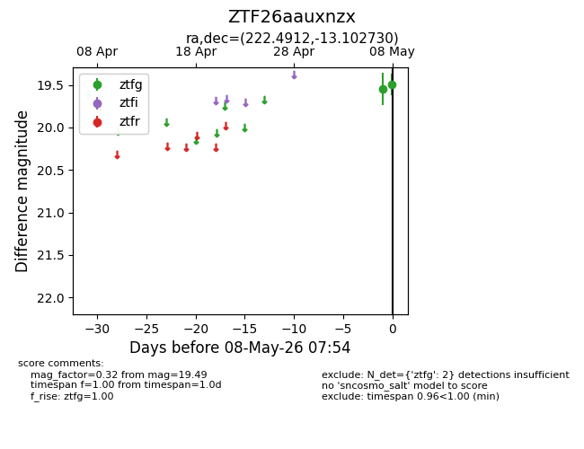
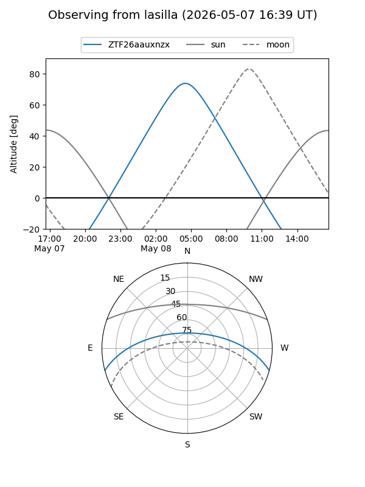
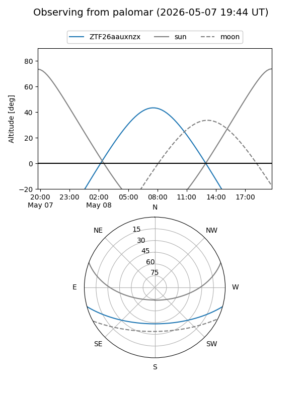

ZTF26aauxnzx
Target ZTF26aauxnzx at 2026-05-08 07:57
Aliases and brokers:
FINK: link
Lasair: link
ALeRCE: link
alt names
ZTF26aauxnzx (ztf,fink_ztf)
Coordinates:
equatorial (ra, dec) = 222.4912,-13.10273
equatorial (HMS+DMS) = 14:49:57.89,-13:06:09.83
galactic (l, b) = (342.2582,+40.54806)
Flags:
Photometry:
last ztfg=19.49
2 ztfg detections
Lightcurve

Visibility


Additional plots